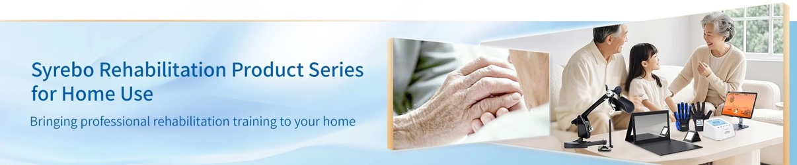

Syrebo 临床研究专栏
11 篇临床研究解读 · 中文 / English / 图片版海报

Robotic Hand-Assisted Rehabilitation in Acute Stroke: New Evidence from a Randomized Controlled Trial
Soft Robotic Glove vs Mirror Therapy: 6-Month Evidence for Stroke Hand Rehabilitation
Robotic Mirroring Training: Letting the Healthy Hand Guide the Affected Hand
Robotic Training Gloves: Between-Group Evidence on Grip Strength and Fugl-Meyer Scores
Soft Robotic Glove in Early Subacute Stroke: Feasibility Evidence for the SY-HR03E
Robotic Glove Combined with Electroacupuncture: How to Read a 200-Patient Four-Arm Study
After a Middle Cerebral Artery Infarct: One 66-Year-Old Patient's Syrebo Glove Rehabilitation
Innovative Mirror Therapy: Preliminary Results from a 60-Patient Randomized Study
Faradic Stimulation Combined with Syrebo C12: A 4-Week Record of One Patient with Left Hemiparesis
Third-Party Comparison: Syrebo's Soft Structure Called the Lowest-Profile, Lightest Option
Home Rehabilitation, Recognized in Japan: Syrebo Named Among the Few Commercialized Home-Use Finger Robots